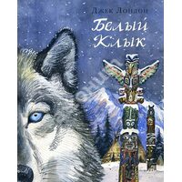
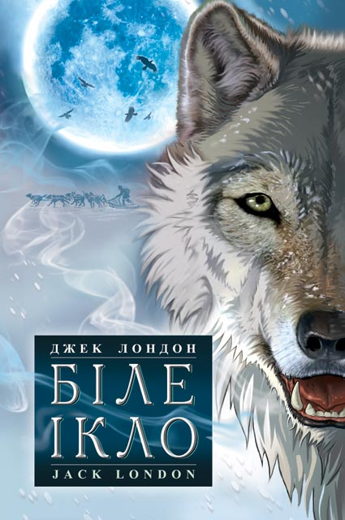
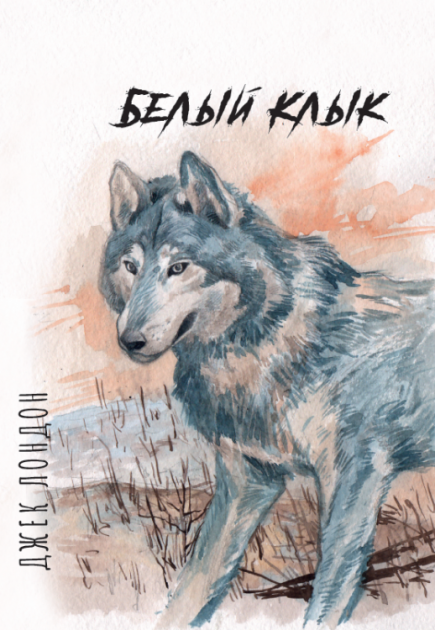
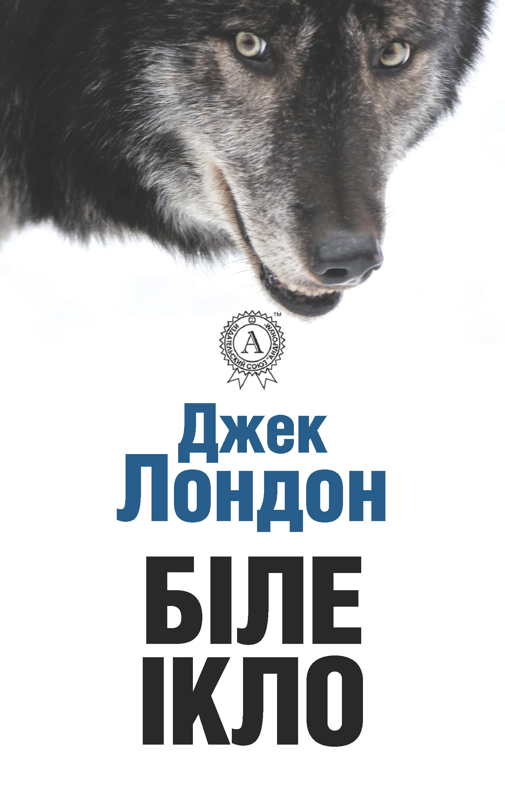

Джек Лондон - дуже відомий автор багатьох творів, правда російських, але то не важливо, бо моя улюблена книжка - це "Білий ікло")



«Біле Ікло» (інші назви «Білий Зуб»[1] та «Білозуб»[2]) (англ. White Fang) — пригодницька повість[3] Джека Лондона, головним героєм якого є вовк на прізвисько Біле Ікло. Уперше твір опубліковано в кількох номерах журналу «The Outing Magazine» з травня по жовтень 1906 року. Оповідь ведеться про долю прирученого вовка під час золотої лихоманки на Алясці наприкінці 19 століття. Значну частину історії показано очима тварини — зокрема, самого Білого ікла. Твір зображує різне ставлення людей до тварин, добро і зло.

Як матеріальне оточення героїв твору, виступають природні пейзажі, простори північних земель, нескінченні дороги, прибережні селища тощо. Закони природи в автора суворі, але справедливі, й лихо приходить саме тоді, коли людина відступає від цих законів. Джек Лондон докладно описує психологію, мотиви поведінки і вчинків Білого Ікла. Письменник показує, як добре, лагідне ставлення до живої істоти вчить її платити за любов любов'ю, а коли треба — то й навіть життям